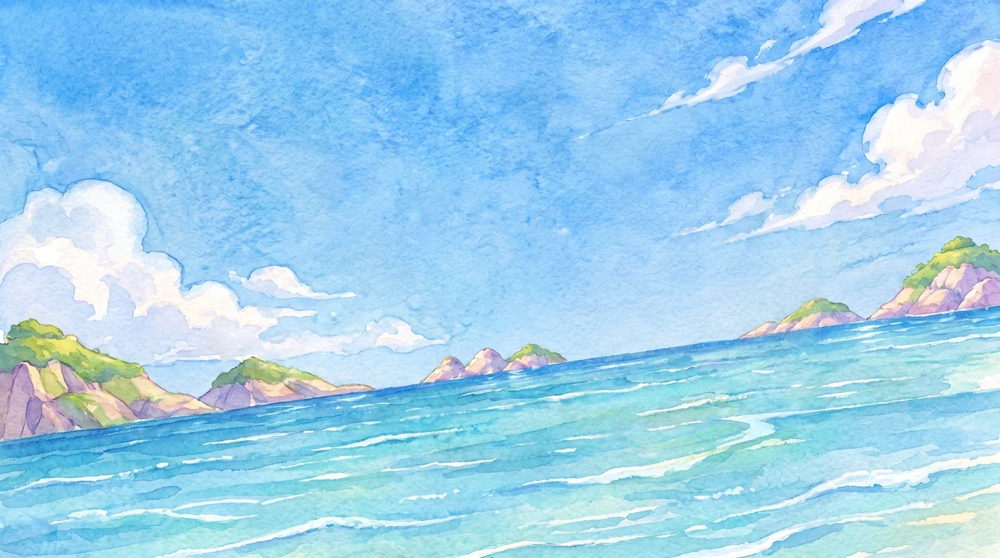
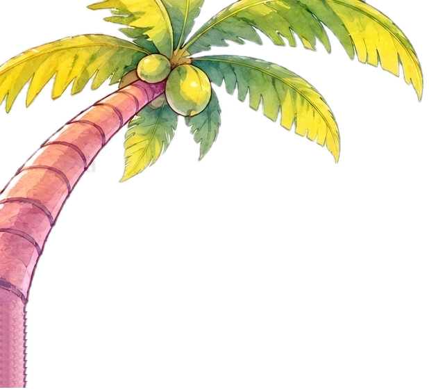
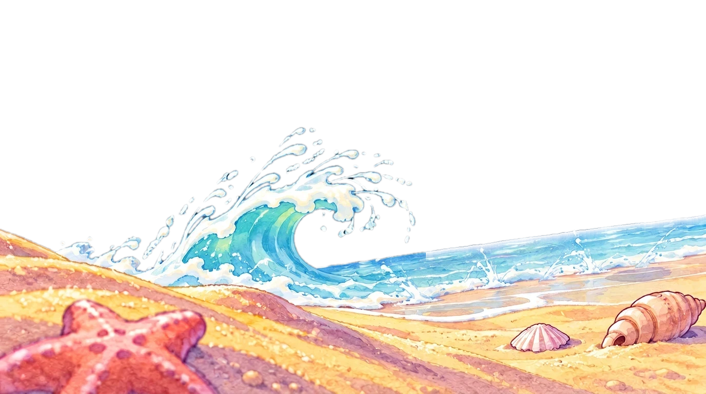
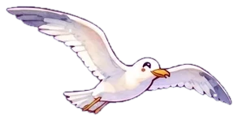
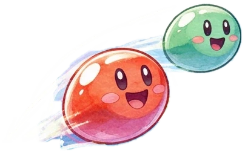

With no phone connected, sling the marble with the mouse and steer with the arrow keys.


Press any button to start
Open this same page on your computer and on each phone. The computer shows the sand; each phone is one player's marble.